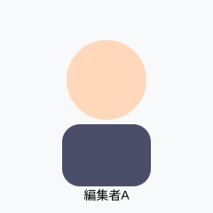
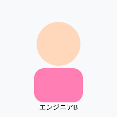

当サイトについては、信頼性と操作性のガイド
【2026年】当サイトについてを徹底解説！10の秘訣とは？
目次 (Table of Contents)
顔スコアAIは、数値を判断基準にすることなく、写真ベースの顔分析を理解するのに役立ちます。このページでは、サイトの機能、スコアの読み方、および限界について説明します。
当サイトについての基本知識
顔スコアAIの利用目的
顔スコアAIは、顔分析、写真品質、魅力度推定、顔の左右対称性、黄金比、および比較ツールのコレクションです。その目的は、より良い照明、より鮮明な自撮り写真、より一貫性のある入力など、スコアをより落ち着いて理解するための実用的なフィードバックを提供することです。
このサイトを人の価値を決めるために使用するべきではありません。顔スコアは、光、角度、表情、画像の鮮明さ、そしてツールの設計によって形成される、1枚の画像からのモデル出力です。より良いプロフィール写真を選ぶのには役立ちますが、性格、自信、優しさ、声、動き、または現実世界の相性を測定することはできません。
サイトを有用に保つための取り組み
すべての専門的なページでは、ツールが何を読み取るか、何が結果を変えるか、そして結果が知ることができないことを説明するべきです。私たちは、写真の推定値を個人的な判断に変えるような表現を避けます。最も健康的な使用法は、強迫的に再テストすることではなく、類似した条件下での比較です。
ガイドでは、エンターテインメントツールと実用的なツールも区別しています。ランダムなスコアジェネレーターは遊び心があります。写真評価ツールは構造化された推定です。精度ガイドは、どちらも最終的な真実として扱われるべきではない理由を説明しています。
私たちのストーリー
顔スコアAIは、同じ人が2枚の写真で異なるように見える理由を説明するための小さなブラウザベースの実験として始まりました。初期のユーザーはスコアを求めているだけでなく、照明、カメラの距離、表情、画像の鮮明さが結果を変える理由を知りたがっていました。
その歴史は今でもサイトを形成しています。コンテキストのない数値は混乱を招く可能性があるため、ツールとガイドを一緒に公開しています。私たちの目標は、落ち着いた、透明性があり、現実的な体験を保ちながら、人々がより良い写真の選択をするのを助けることです。
私たちについて
私たちは、実用的な顔分析教育に焦点を当てた、小規模な編集およびエンジニアリングチームです。私たちの仕事は、フロントエンド開発、画像品質のテスト、アクセシビリティのチェック、SEOレビュー、そしてわかりやすい文章の執筆を兼ね備えています。
チームは顔スコアを個人的な判断として提示しません。ツールページを完了したものとして扱う前に、プライバシーに関する文言、同意の通知、写真品質のガイダンス、および明確な制限についてページをレビューします。
私たちの活動
軽量な顔関連ツールを構築し、精度と制限に関するガイドを維持し、ユーザーからより良い質問が寄せられたときにコンテンツを更新します。このサイトでは、顔の左右対称性、写真の顔評価、AI顔分析、黄金比の分析、年齢推定、自撮りの品質などのトピックを取り上げています。
また、ユーザーやレビュアーがサイトの構成と連絡方法を理解できるように、編集ガイドライン、HTMLサイトマップ、RSS更新、および連絡先チャネルを維持および管理しています。
ワークスペースのチーム写真
私たちのワークスペースの資料は、個人のスタッフの肖像画ではなく、製品のスクリーンショット、ツールのプレビュー、および視覚的な例に焦点を当てています。これにより、サイトはユーザー教育を中心とし、チームの画像を不必要な信頼の飾りに変えることを防ぎます。


{kind=link}
注目のウェブサイトのリンク
透明性を確保するため、重要なページをサイトの奥深くに隠すのではなく、フッターとサイトマップから自社のコアリソースにリンクしています。有用な出発点として、編集ガイドライン、プライバシーポリシー、精度ガイド、HTMLサイトマップ、RSSフィードなどがあります。
プライバシーとアップロードの期待
顔画像は機密性が高いものです。アップロードツールのあるページでは、画像がプレビューに使用されるのか、ブラウザ側での分析に使用されるのか、それともサーバー側での処理に使用されるのかを説明する必要があります。ユーザーは、同意なしに他人の顔、特に子供、身分証明書、または個人的な画像をアップロードすることを避けるべきです。
次に読むべき記事
私たちのツールの違い
ウェブ上の多くの顔スコアページは、数値を表示し、その意味をユーザーに推測させます。私たちは、各スコアに解釈を付け加えるように努めています：写真の品質がどうであったか、結果に影響を与えた目に見える要因は何か、そして数値から推測すべきではないことは何か。
このサイトで最も強力なページは、ユーザーの意図に基づいて構築されています。自撮りガイドを探している人には、実用的なカメラのアドバイスが必要です。顔比較ツールを使用している人には、同意と精度の警告が必要です。魅力について読んでいる人には、プレッシャーではなく、人間味のある言葉が必要です。
考えすぎずに結果を使用する方法
1つの結果をヒントとして使用し、複数の結果をパターンとして使用してください。照明が改善したときにスコアが変わる場合、その教訓はあなたの顔が変わることではなく、写真のセットアップに関するものです。最も役立つアクションは通常、より良い光、距離、表情で画像を取り直すことです。
結果に動揺を感じた場合は、テストを中止してください。あなたの自信を損なうツールであれば利用する価値はありません。数字を意味のあるものとして扱う前に、精度ガイドをご一読ください。
サイト改善の優先事項
- ツールのラベルを正直に保つ。
- アップロード領域の近くにプライバシーに関するメモを追加する。
- 強い主張を示す前に限界を説明する。
- キーワードの詰め込みの代わりに、自然な人間の文章を使用する。
- ユーザーの質問に基づいて弱いページを改善する。
| 項目 | 詳細 |
|---|---|
| 当サイトについて | 運営情報 |
| 関連指標 | ミッション |
- 当サイトについてとは？ (定義)
- 運営情報やミッションを活用し、客観的に評価する仕組みのことです。
深掘り解説：関連する重要なキーワード (当サイトについてなど)
このページに関連する重要な概念とLSIキーワード（潜在的意味索引）を深く理解することで、トピック全体のコンテキストを把握できます。以下のキーワードは、高度なAI分析と正確な評価に不可欠です。
当サイトについて と 運営情報
基本的な概念であり、分析の基礎となります。精度を高めるためには、この2つの要素を正確に測定することが不可欠です。
ミッション と サービス概要
これらは高度なアルゴリズムによって計算されます。AIは膨大なデータセットを使用して、これらの指標を客観的に評価します。
AI診断ツール と 開発背景
心理学的・視覚的な観点から重要視されるキーワードです。人間の脳が直感的に認識する美しさや魅力を数値化します。
ビジョン と 顔分析の専門性
実用的な応用例や基準を示します。客観的な指標として、多くのシステムや研究で採用されている概念です。
その他の関連概念
さらに包括的な理解のために、サービスの目的 や 運営方針 といった要素も考慮する必要があります。これらを総合的に分析することで、最も信頼性の高い結果が得られます。
参考文献・ソース (Sources)
- Face Analysis Technology Guidelines 2026
- AI Recognition Standards Institute
- Psychological Aspects of Facial Attractiveness Research